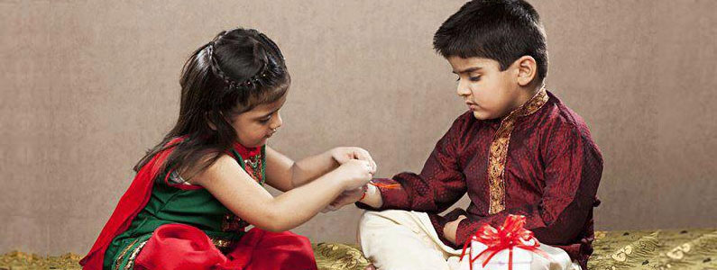
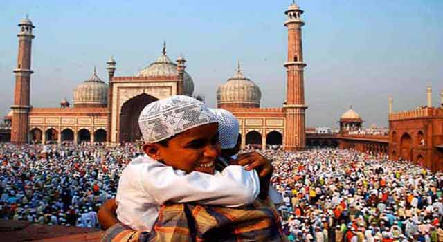
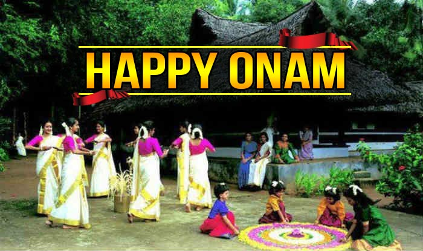
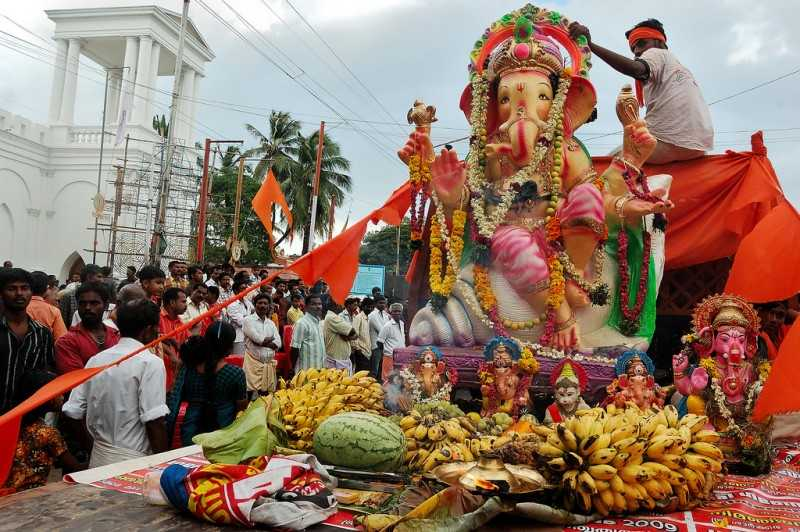
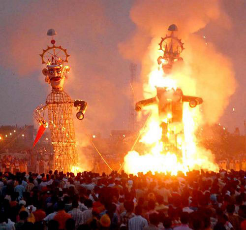
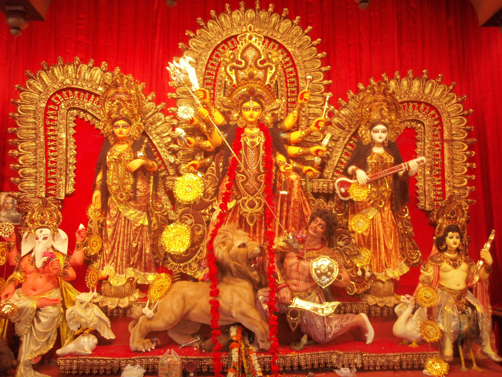
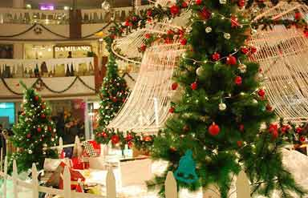

India is a land of festivals and fairs. Virtually celebrating each day of the year, there are more festivals celebrated in India than anywhere else in
the world. Each festival pertains to different occasions, some welcome the seasons of the year, the harvest, the rains, or the full moon.
Others celebrate religious occasions, the birthdays of divine beings and saints, or the advent of the New Year. A number of these festivals are common to most parts of India.
However, they may be called by different names in various parts of the country or may be celebrated in a different fashion.
Some of the festivals celebrated all over India are mentioned below. However, this section is still under enhancement.
As Siddharth Katragadda, a famous writer of the Indian origin puts it “The Greatness of a Culture can be found in its Festivals”,
so, the greatness of a country like India can be examined by sparing a glance at the vivid and vivacious list of festivals in India. Such diverse cultures,
culminating such varied festivals and that too under the name of a single country; such is the greatness of Indian culture. The wide spectrum of religions, occupations,
and faiths in the country being the prime cause of such diversification, these festivals are celebrated with sheer enthusiasm and devotion.
The arrival of spring in India is marked with the revelers covered in bright colored powder as they celebrate Holi. Usually falling in March, the festival of Holi brings with it the celebrations where the merrymakers wish each other Happy Holi by applying ‘gulal’ or colored powder on each other’s cheeks. Savories, dance, music, and food are the other highlights of this festival.
Celebrated on the full-moon day of the Hindu month of Sravana (July/August), this festival celebrates the love of a brother for his sister. On this day, sisters tie rakhi on the wrists of their brothers to protect them against evil influences, and pray for their long life and happiness. They in turn, give a gift which is a promise that they will protect their sisters from any harm. Within these Rakhis reside sacred feelings and well wishes. This festival is mostly celebrated in North India.
Id-ul-Zuha (Bakr-Id), is a festival of great rejoice, special prayers and exchange of greetings and gifts mark this festival of Muslims. Id-ul-zuha, the festival of sacrifice is celebrated with traditional fervor and gaiety in India and the world. It is called Id-ul-Adha in Arabic and Bakr-Id in the Indian subcontinent, because of the tradition of sacrificing a goat or 'bakr' in Urdu. The word 'id' derived from the Arabic 'iwd' means 'festival' and zuha comes from 'uzhaiyya' which translates to 'sacrifice'.
The biggest festival of the state of Kerala, Onam is a harvest festival that is celebrated all across the state by people of all communities. Celebrated as the initiation of the Malayalam calendar, this festival falls between August-September. The festival lasts from 4-10 days and elaborate feasts, folk songs, elegant dances, energetic games, elephants, boats, and flowers, all are a part of this dynamic festival.
Celebrated with much fervor and excitement, the festival of Ganesh Chaturthi revels the homecoming of Lord Ganesh. One of the most colorful and exciting 10 day-long celebrations of the Ganesh Chaturthi is initiated with installing the idol of Lord Ganesh at home to bless the house, and its members with happiness and prosperity. At the end of the ten days, this idol is taken with much pomp and show to be immersed in water.
This festival marks the end of the nine-day long festival of Naravratras. The day is commemorated as the day Lord Ram attained victory over Ravana, and therefore, this festival symbolizes the victory of good over evil. There are many different ways of celebration of Dussehra in India. As a celebration, the symbolic statues of Ravana and his brothers Meghnath and Kumbhkaran, are build and placed at different avenues to be burnt by an arrow of fire.
This festival is nothing less than a five-day-long carnival in Bengal with religious associations. Held in the honor of Goddess Durga, this puja is a festival which witnesses exuberant preparations for months in advance. Setting of decorative pandals and preparing for various cultural activities are a part of this festival.
Among the most famous festivals of India, Christmas is celebrated on the 25th of December each year. Celebrated to commemorate the birth of Jesus Christ, this festival is the time for religious and cultural celebrations for Christians. Usually celebrated by decorating the Christmas tree and exchanging gifts, this festival is known for merrymaking.